RAWMID
RAWMID_WEB_/_01
Websites and CRM for RAWMID
Three RAWMID pages: a landing page, a marathon and the creative team’s CRM. I set the task and the concept for each, the team built them, and I signed off on the result.
Dehydrator landing page
Landing page for the RAWMID dehydrator range. It opens with the objection “why a dehydrator when a 3,000-rouble dryer exists” and leads to choosing a model: what you can dry, which experts recommend it, five models from 14,740 to 30,000 ₽ in one row, customer reviews with video, and a quiz on what you plan to dry.
The landing page launched, and later pages for other products were built on its structure. It is live at dehydrator.madeindream.com ↗.
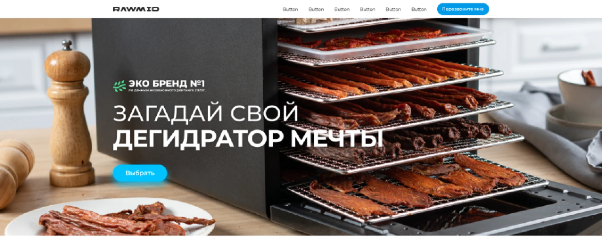
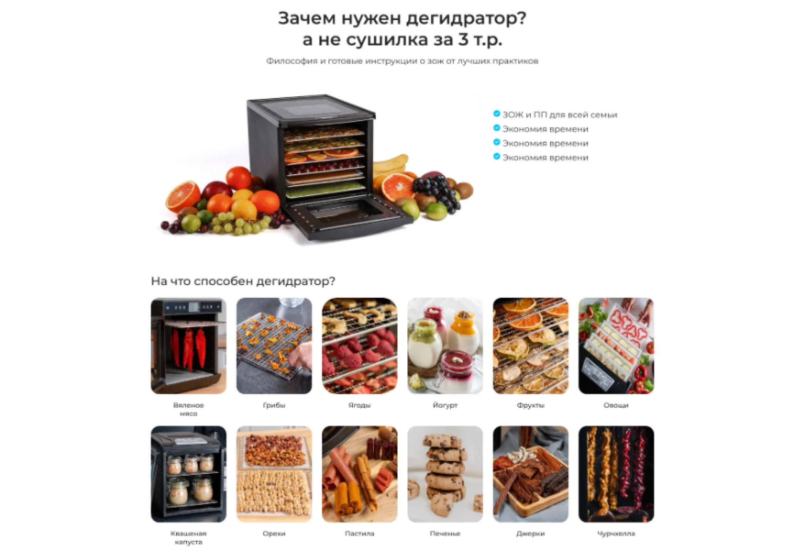
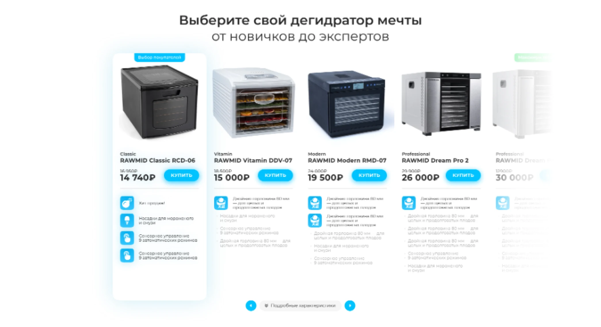
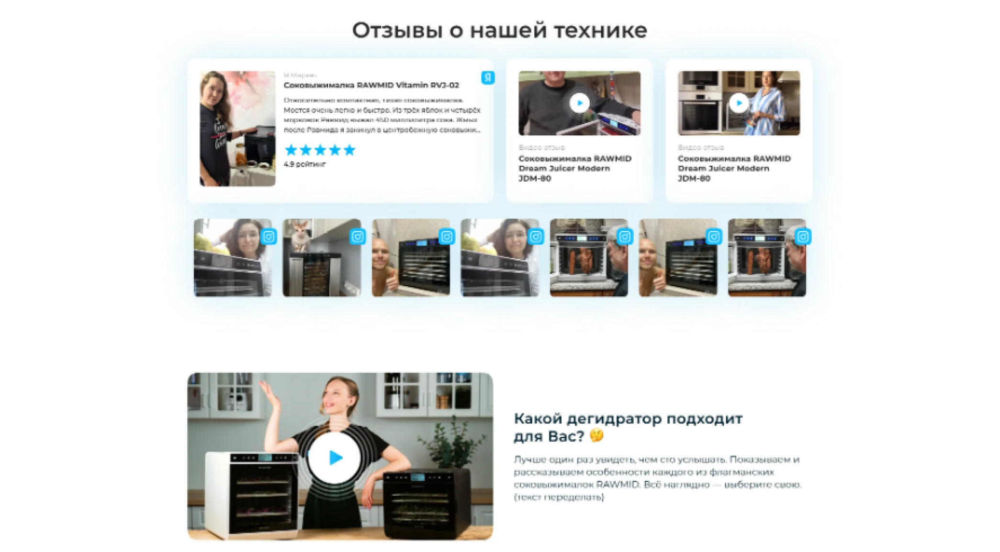
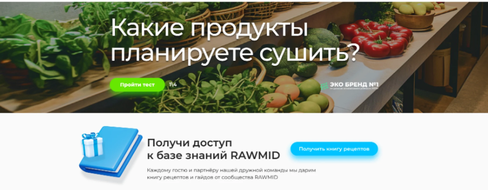
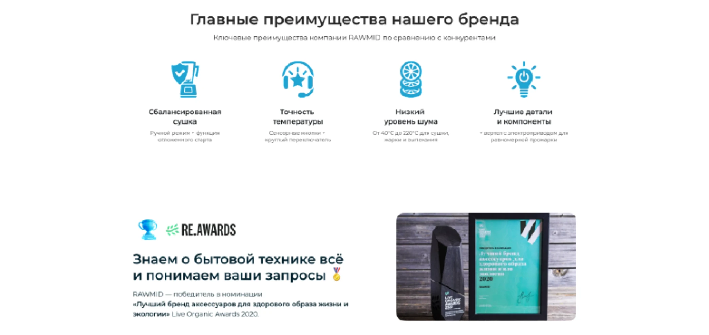
RAWMID_WEB_/_02
“Dream Birthday” marathon
Page for a 6–20 July marathon: 11 nutrition and fitness experts, a prize pool of RAWMID appliances for three places, rules and a live-stream schedule. After the marathon the first screen turned into the results: the winners and a button to discounted products.
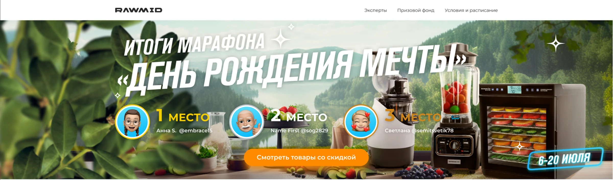
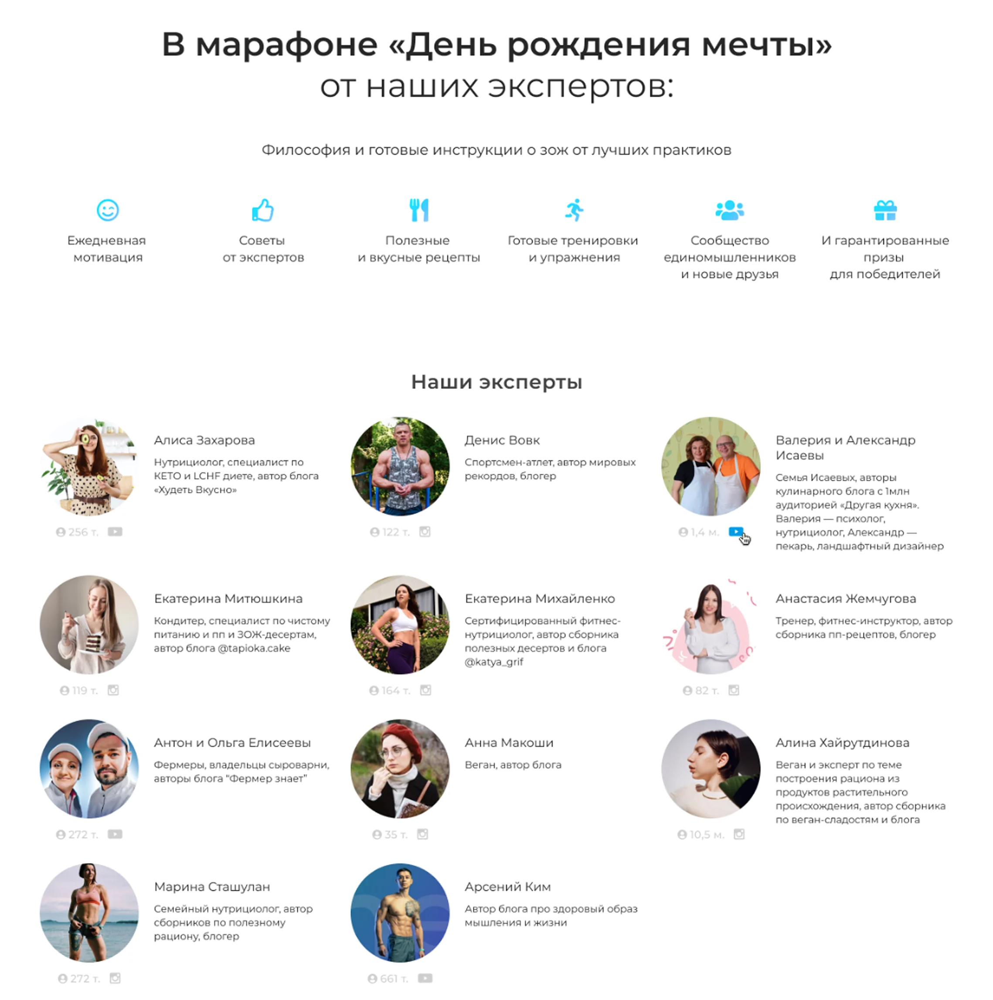
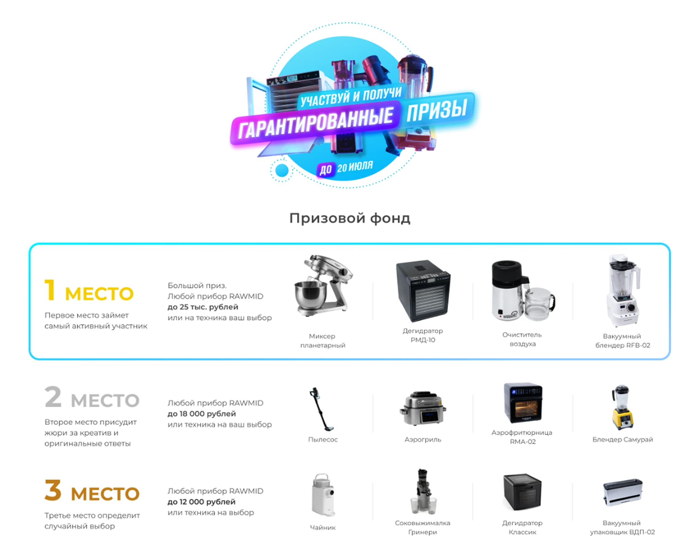
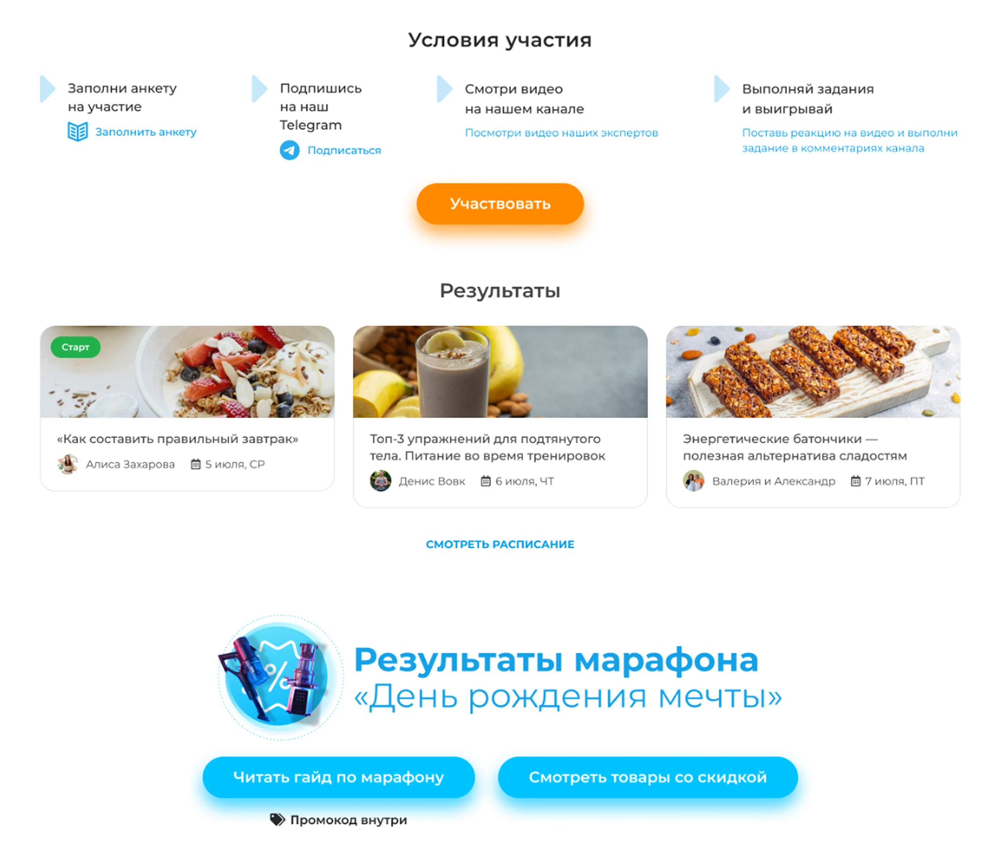
RAWMID_WEB_/_03
Creative team CRM
The creative team’s workspace in the RAWMID CRM: tasks with filters, statuses, assignees and watchers; a task card with a per-product checklist, files and discussion.
The CRM is in use and still being developed: task tracker, client order intake, project work. It is a closed system.
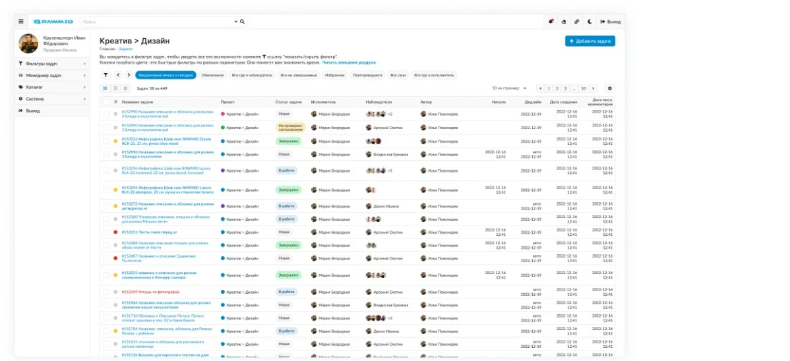
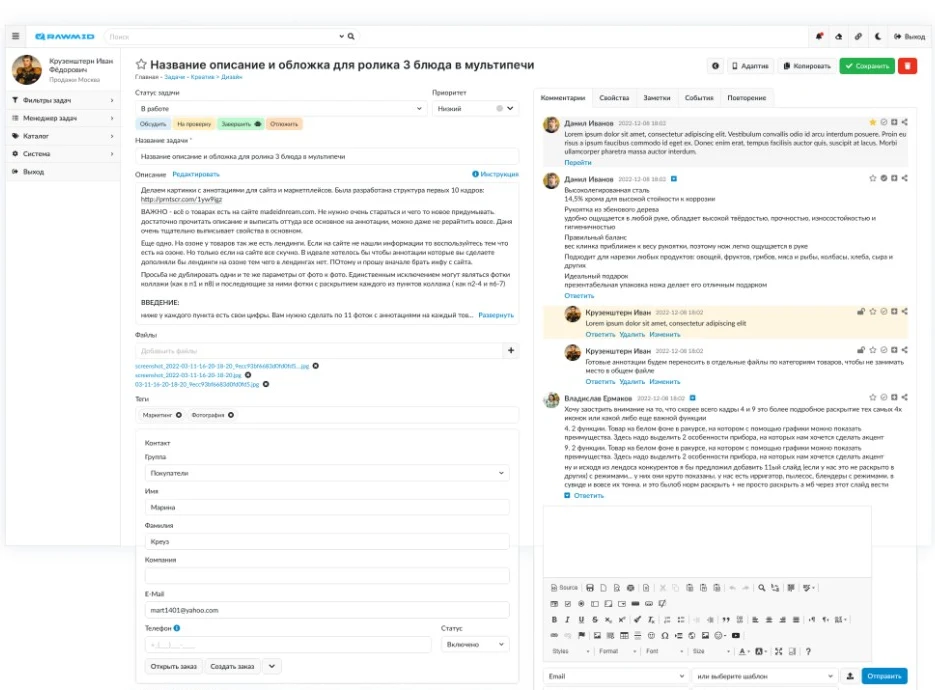